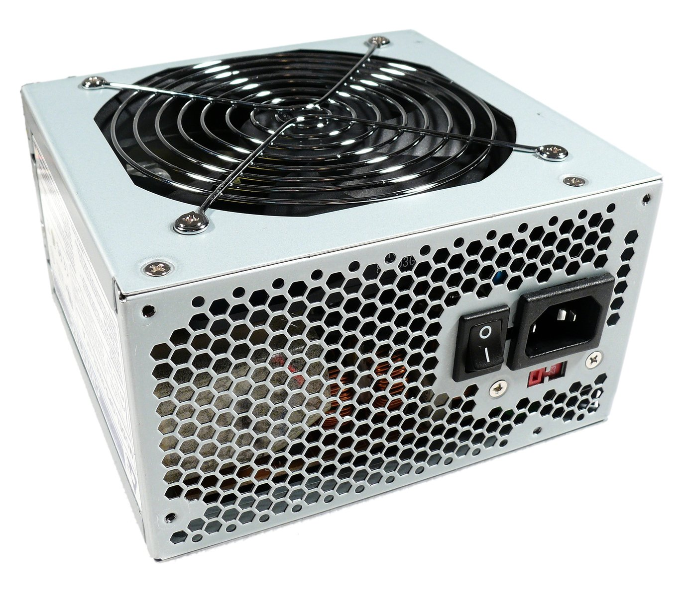

Vad är en Power-Supply?
En Power Supply Unit eller strömförsöjning på svenska är en central komponent för din dator då de tar hand om din dators elektriska energi. De omvandlar bland annat spänningen från väguttaget så att datorns komponenter inte skadas. Pågrund av den tar hand om din dators strömförsörjning är det viktigt att välja rätt Power-Supply för just dina komponenter så att de inte får för mycket eller för lite ström.
Startsida
